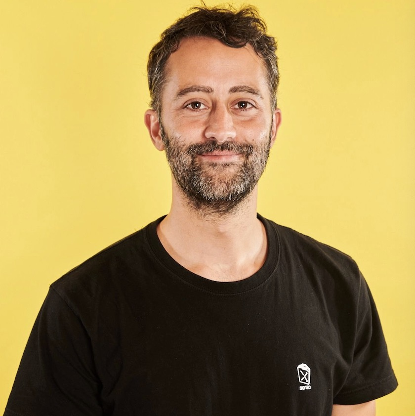

Dong, Xin Luna
Principal Scientist, Meta Reality Lab
Title: XXX
Abstract: XXX
Abstract: XXX
Han, Jiawei
Michael Aiken Chair Professor, UIUC
Title: Towards Automatic Construction Theme-Specific Knowledge-Bases Assisted with Large Language Models
Abstract: There can be different kinds of knowledge bases. Besides the popularly used general knowledge bases like Wikipedia, a very useful kind at the other end of the spectrum could be domain- and application-specific ones, such as for a single theme (e.g., Russia-Ukraine War, EV battery, or LLM). It is unrealistic to construct such a knowledge base relying on labor-intensive human annotation. LLM brings us with great hopes for automated construction of such KBs since they are self-trained from massive texts and may serve as “implicitly” general knowledgebase, plus Wikipedia and ontology may provide with us good starting points. We present our vision on using LLM to develop such a theme-specific knowledgebase, including finding theme-specific documents, topic discovery, taxonomy construction, taxonomy-guided information, and knowledge base construction. Hope this talk may motivate more discussions on this line of work.
Bio: Jiawei Han is Michael Aiken Chair Professor in the Department of Computer Science, University of Illinois at Urbana-Champaign. He received ACM SIGKDD Innovation Award (2004), IEEE Computer Society Technical Achievement Award (2005), IEEE Computer Society W. Wallace McDowell Award (2009), Japan's Funai Achievement Award (2018), and being elevated to Fellow of Royal Society of Canada (2022). He is Fellow of ACM and Fellow of IEEE and served as the Director of Information Network Academic Research Center (INARC) (2009-2016) supported by the Network Science-Collaborative Technology Alliance (NS-CTA) program of U.S. Army Research Lab and co-Director of KnowEnG, a Center of Excellence in Big Data Computing (2014-2019), funded by NIH Big Data to Knowledge (BD2K) Initiative. Currently, he is serving on the executive committees of two NSF funded research centers: MMLI (Molecular Make Research Institute)—one of NSF funded national AI centers since 2020 and I-Guide—The National Science Foundation (NSF) Institute for Geospatial Understanding through an Integrative Discovery Environment (I-GUIDE) since 2021.
Abstract: There can be different kinds of knowledge bases. Besides the popularly used general knowledge bases like Wikipedia, a very useful kind at the other end of the spectrum could be domain- and application-specific ones, such as for a single theme (e.g., Russia-Ukraine War, EV battery, or LLM). It is unrealistic to construct such a knowledge base relying on labor-intensive human annotation. LLM brings us with great hopes for automated construction of such KBs since they are self-trained from massive texts and may serve as “implicitly” general knowledgebase, plus Wikipedia and ontology may provide with us good starting points. We present our vision on using LLM to develop such a theme-specific knowledgebase, including finding theme-specific documents, topic discovery, taxonomy construction, taxonomy-guided information, and knowledge base construction. Hope this talk may motivate more discussions on this line of work.
Bio: Jiawei Han is Michael Aiken Chair Professor in the Department of Computer Science, University of Illinois at Urbana-Champaign. He received ACM SIGKDD Innovation Award (2004), IEEE Computer Society Technical Achievement Award (2005), IEEE Computer Society W. Wallace McDowell Award (2009), Japan's Funai Achievement Award (2018), and being elevated to Fellow of Royal Society of Canada (2022). He is Fellow of ACM and Fellow of IEEE and served as the Director of Information Network Academic Research Center (INARC) (2009-2016) supported by the Network Science-Collaborative Technology Alliance (NS-CTA) program of U.S. Army Research Lab and co-Director of KnowEnG, a Center of Excellence in Big Data Computing (2014-2019), funded by NIH Big Data to Knowledge (BD2K) Initiative. Currently, he is serving on the executive committees of two NSF funded research centers: MMLI (Molecular Make Research Institute)—one of NSF funded national AI centers since 2020 and I-Guide—The National Science Foundation (NSF) Institute for Geospatial Understanding through an Integrative Discovery Environment (I-GUIDE) since 2021.

Barbieri, Francesco
Senior Research Scientist, Snap
Title: The Importance of "In the Moment" Knowledge: Contextualizing NLP Models with Time, Location and Weather Information
Abstract: In this talk I will discuss why "in the moment" knowledge, like time, location, and weather data, is crucial for improving NLP models. Social media posts often contain short and challenging-to-understand text. Integrating context from time, location, and weather helps us better interpret these posts as people behave differently depending on the situation. Considering such context aids us in grasping the user's current state leading to improved NLP classifiers.
Bio: Francesco is a Senior Research Scientist at Snap Research, and he is interested in understanding social media communications. His current research focuses on developing NLP tools to represent and evaluate social media text, with special attention to temporal shifts and contextualized real-time information. Scholar: https://scholar.google.com/citations?user=B10uzI4AAAAJ&hl=en&oi=ao
Abstract: In this talk I will discuss why "in the moment" knowledge, like time, location, and weather data, is crucial for improving NLP models. Social media posts often contain short and challenging-to-understand text. Integrating context from time, location, and weather helps us better interpret these posts as people behave differently depending on the situation. Considering such context aids us in grasping the user's current state leading to improved NLP classifiers.
Bio: Francesco is a Senior Research Scientist at Snap Research, and he is interested in understanding social media communications. His current research focuses on developing NLP tools to represent and evaluate social media text, with special attention to temporal shifts and contextualized real-time information. Scholar: https://scholar.google.com/citations?user=B10uzI4AAAAJ&hl=en&oi=ao